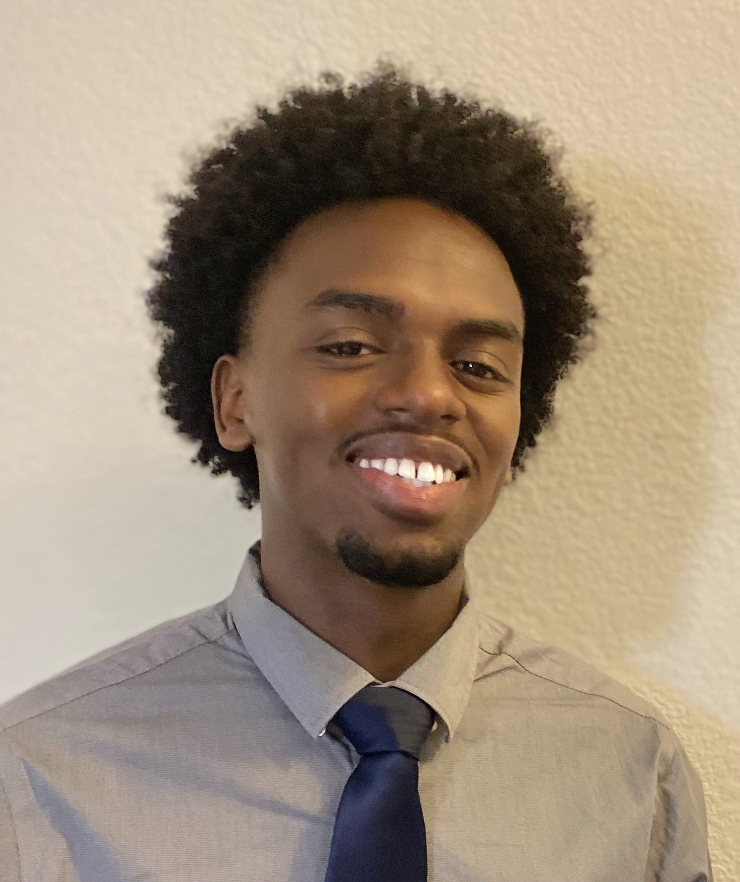

Adebola Badru (L) - Interview
Acted as a communication medium between the group and the testers, ensuring proper communication.
Hepher Ossounga - Presentation
Pulled together all the information from stage 1 condensing it into presentable bits.

Prince Niyonkuru - Website
Created the face of the group with details of members and all necessary information regarding stage 1 using all gathered information and ensured clarity.
Halmuhammet Muhamedorazov - Website
Created the face of the group with details of members and all necessary information regarding stage 1 using all gathered information and ensured clarity.